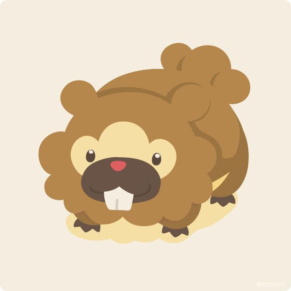

Sven's Data Science Portfolio
Who am I? You Sure You Want to Know?



My name is Sven Wu and I was a Data Science undergraduate at UC Berkeley.
In my freetime, you will find me trying to come up with game and app ideas or grinding away at my own personal projects.
Right now some of my projects include this portfolio(how meta).
When I am not working, you'll often find me playing videogames or basketball with my friends. I might even do the occassional skateboarding.
I'm not really good at either of those things but we're working on that.
I love going out and traveling with my family a lot. My goal is to be able to visit other places outside the US someday, like Taiwan, Seoul, or France.
I keep myself busy all the time, so you'll find me sleeping a lot when I get tired.
When I can manage to compel myself to be active, I exercise and workout.
I like to run too but my stamina blows. We're working on that too. :D
Some Cool Projects I Built!
Pokemon: So You Want to Be a Master(2021)
ML Developer
I built an entire machine learning project centered around predicting the outcomes of Pokemon battles.
I got my dataset from Kaggle. The data contained a wide variety of different Pokemon battle matchups and the respective winner from each one.
I performed EDA and built a Random Forest Classifier that achieved an accuracy score of 95%! I then built a very basic Pokemon battle simulator. Apparently Pikachu could beat Onix in a 1v1?!? Thought that only happens in the anime. More on that.
Check out the Github linked under this image for more!
Yelp Restaurant Survival (2021)
ML Algorithm Developer and Project Reporter
Main ML algorithm developer on my team where I built 5 different models for the project. The models were trained on Yelp's public restaurant dataset. My goal was to extract the most important features that could be used to predict whether or not a restaurant would close.
I used those results to generate insights for owners to mediate the success and health of their restaurant. This would help inform owners on the type of next steps they can take to prolong their restuarant's longevity.
Check out the Github and Medium article linked under this image for more!
GGWP - Identify Toxic Behavior in Gaming (2021)
NLP Algorithm Developer and Insight Reporter
Worked with GGWP startup to identify patterns of toxicity within games by exploring provided 21 million data points derived from Dota 2 chats.
I worked on player profiles and deployed surveys in some of my Discord gaming communities to determine which forms of toxicity should be given priority by moderators. The player profiles would help moderators determine what kind of in-game measures they would take on toxic players(p-bans, timeout, IP blocks, etc).
Check out the Github linked under this image for more!
Most Popular Pokemon Starters Bar Chart Race (2021)
Data Visualizer
I was inspired by Data is Beautiful to make my own bar chart race. I collected data from Google Trends and calculated the average yearly search interest of all 8 generations of Pokemon starters, including their evolutionary lines. This amounted to a total of 72 different Pokemon. I then transformed the data using Python, so that I could use it for visualization.
I used Flourish's bar chart race template to then plot out the most popular Pokemon from 2004(the earliest data I could extract) all the way to 2021. I wanted to go further back to 1997 but the data was not available.
Check out the Youtube video linked under this image for more!
Spam vs. Ham (2019)
Programmer
Data Science project I did for the UC Berkeley DS100 Fall 2019 Spam vs.Ham Email Classification Kaggle competition.
I used feature engineering, cross validation, and logistic regression to build my final classification model. I achieved a 93.33% testing accuracy surpassing the 88% threshold set by the competition. I was also in the top 25% for the Kaggle competiton.
The actual word cloud I made for the project is the image you see on the left!
Check out the Kaggle linked under this image for more on the competition!
Touch the Bidoof (2021)
Programmer/Engineer
The first app I ever built using really basic Javascript.
I made this for fun after being inspired by an old Pokemon Rangers game, so it doesn't really do anything too revolutionary. You can save your highest number of clicks though. No one has beaten the high score yet...
Check out the Github and the actual website linked under this image to catch some Bidoofs!
Collaborative Filtering for Recommending Songs to Users (2021)
ML Algorithm Developer
Built a collaborative filtering model to help recommend specific songs to specific users. I was given a dataset that contained numerous different people and their ratings to a wide variety of songs.
2 validation sets were used. One for hyperparameter tuning and the other for the final blended model. Concluded that adding genre dummy variables increased the predictive power of our collaborative filtering model.
Reach out to me!